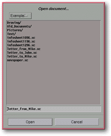

<!-- Documentation Xclamation (c)1994-2000 AXENE contact axene@axene.org>
<html>

<head>
<title>File Selectors</title>
</head>

<body BGCOLOR="#FFFFFF" BACKGROUND="Images/back.gif" TEXT="#000000">

<p ALIGN="right"> </p>

<p><br>
<br>
A file selector chooses the file to be read or write. All file selectors function in the
same manner, although certain selectors do offer additional options. <br>
<br>
</p>

<hr>

<p align="center"><br>
 <br>
<small><i>Screen shot: Typical file selector </i></small></p>

<p><br>
</p>

<hr>

<p><br>
</p>
<a NAME="file_selector">

<h3>Common elements of file selectors:</h3>
</a>

<ul>
  <li><a NAME="title_label">A <b>title</b> indicates the file selector's name. </a><br>&nbsp;</li>
  <li><a NAME="sub_directories_list">A roll-down menu allows the user to rapidly <b>switch
    back between previous directories and the current one</b>. This menu contains all
    sub-directories of a specific branch of the current directory all the way back to the root
    directory of that branch. </a><br>&nbsp;</li>
  <li><a NAME="file_list">The next list shows all the <b>sub-directories and files contained
    in the current directory</b>. Directory names listed in alphabetical order appear at the
    beginning of the list with the &quot;/&quot; character at the end of each name.
    Corresponding filenames with an eventual filter are displayed next. Double clicking on a
    directory name opens that directory; the current directory name is added to the roll-down
    menu and the selected directory becomes the new current directory, with its contents
    displayed in the list. A single click on a filename causes this name to appear in the text
    field below. Double clicking on a filename selects that file without other confirmation. </a><br>&nbsp;</li>
  <li><a NAME="file_name_textfield">The text field <b>displays the filename</b> selected in
    the menu and allows entry of a new title. A complete filename with routing can be entered.
    If &quot;~&quot; is entered and validated, the root of this account will become the new
    current directory; however, if the filename is followed by the &quot;/&quot; character,
    the current directory will point towards the new destination. In certain file selectors an
    extension is added to the filename automatically upon validation. </a><br>&nbsp;</li>
  <li><a NAME="left_button">The left button of the lower portion of a file selector <b>accepts
    a filename</b> to be opened, then closes the box. </a><br>&nbsp;</li>
  <li><a NAME="button_cancel">The <i>&quot;Cancel&quot;</i> button on the right cancels the
    chosen action and <b>closes the window</b>. </a><br>&nbsp;</li>
</ul>

<p><br>
</p>

<hr>
<a NAME="fs_load">

<h3>Open a document:</h3>

<p>The <i>&quot;Open a document&quot;</i> file selector opens previously saved Xclamation
documents. Xclamation filenames normally contain the extension &quot;.xc&quot;. Only files
with this extension can be displayed. This file selector offers no other special features;
for further details on the use of the Open a document file selector, see instructions for
use of a </a><a HREF="Box_File_Selectors.html#file_selector">standard file selector</a>. </p>

<p><br>
</p>

<hr>
<a NAME="fs_save">

<h3>Save a Document as...:</h3>
<i>

<p>&quot;Save a document as...&quot;</i> chooses the name under which the active document
will be saved on the disk. The extension &quot;.xc&quot; will be added automatically to
the name of the file. This file selector offers no other special features; see also the
instructions for </a><a HREF="Box_File_Selectors.html#file_selector">standard file
selector</a>. </p>

<p><br>
</p>

<hr>
<a NAME="fs_import_image">

<h3>Import an Image:</h3>

<p>The <i>&quot;Import an Image&quot;</i> file selector fills a frame with an image from a
file. It is imperative that at least one frame be selected in the active document. There
are two methods of opening this file selector, whether by the <i>&quot;</a><a HREF="Menu_File.html">File</a> / <a HREF="Menu_File.html#import_menu_entry">Import</a> / <a HREF="Menu_File.html#import_image_menu_entry">Image...</a>&quot;</i> menu or by the <a HREF="Menu_Context.html#cm_frame_empty">empty frame's contextual menu</a>. If several
frames are selected, importing an image will fill all the selected frames with the same
image. This selector looks and works like a <a HREF="Box_File_Selectors.html#file_selector">standard file selector</a>. Images are
automatically recognized if stored in one of the following formats: JPeg, Gif, Tiff, PNG,
Targa, PCX, BMP (RLE), SunRaster, MacPaint and Xwd (X Window Dump). </p>

<p><br>
</p>

<hr>
<a NAME="fs_import_text">

<h3>Text Importation:</h3>

<p>The <i>&quot;Text Importation&quot;</i> file selector fills a frame with text from a
file. At least one frame must be selected in the active document. There are two ways to
open this file selector: through the <i>&quot;</a><a HREF="Menu_File.html">File</a> / <a HREF="Menu_File.html#import_menu_entry">Import</a> / <a HREF="Menu_File.html#import_text_menu_entry">Text...</a>&quot;</i> menu, or through the <a HREF="Menu_Context.html#cm_frame_empty">empty frame's contextual menu</a>. If several
frames are selected, text importation will automatically link the frames of the selection
from the first selected frame to the last. The file selector is divided horizontally in
two parts. The left portion looks and operates like a <a HREF="Box_File_Selectors.html#file_selector">standard file selector</a>. The right portion
contains the Format roll-down menu which chooses the format of the text file to be
imported. The two available formats are ASCII and the internal Xclamation format (which
can be saved from the text editor). Warning! Upon first opening this file selector, the
selected format is the Xclamation format. </p>

<p><br>
</p>

<hr>
<a NAME="fs_import_vector">

<h3>Line Art Importation:</h3>

<p>The <i>&quot;Import Line Art&quot;</i> file selector fills a frame with a line art from
a file. At least one frame must be selected in the active document. There are two ways to
open this file selector: through the <i>&quot;</a><a HREF="Menu_File.html">File</a> / <a HREF="Menu_File.html#import_menu_entry">Import</a> / <a HREF="Menu_File.html#import_vector_menu_entry">Design...</a>&quot;</i>, menu, or through
the <a HREF="Menu_Context.html#cm_frame_empty">empty frame's contextual menu</a>. If
several frames are selected, importation of a line art will fill all the frames with the
same drawing. This selector looks and works like a <a HREF="Box_File_Selectors.html#file_selector">standard file selector</a>. The line art
formats supported by Xclamation are Adobe® Illustrator®, Windows Meta File (WMF), Xfig
and some PostScript® files. Only files with the extensions: &quot;.wmf&quot;,
&quot;.ai&quot;, &quot;.eps&quot;, &quot;.epsf&quot;, &quot;.epsi&quot;, &quot;.fig&quot;,
&quot;.xfig&quot; and &quot;.ps&quot; will appear in the menu. </p>

<p><br>
</p>

<hr>
<a NAME="fs_print_in_file">

<h3>Printing to a File...:</h3>

<p>The <i>&quot;Printing to a file...&quot;</i> file selector selects the file name under
which the active document's print specifications will be saved. This selector is summoned
from the '</a><a HREF="Box_Print.html">print</a>' dialog box when File is chosen as the
printer. This selector looks and works like a <a HREF="Box_File_Selectors.html#file_selector">standard file selector</a>. The extension
&quot;.ps&quot; is added automatically to the filename. </p>

<p><br>
</p>

<hr>

<p ALIGN="right"></p>
</body>
</html>
